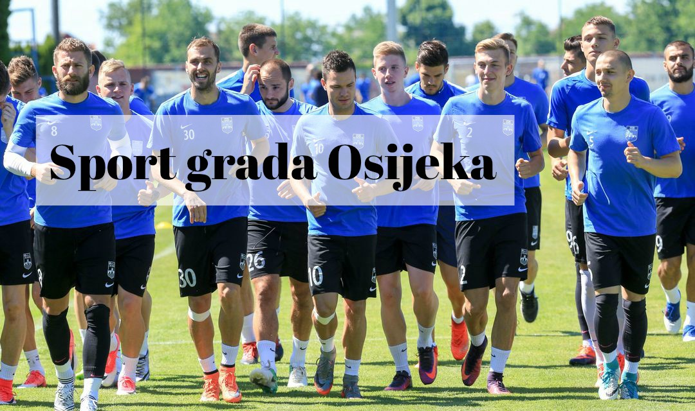

Sportske djelatnosti su djelatnosti od posebnog interesa za Republiku Hrvatsku, koje se potiču izgradnjom i održavanjem sportskih građevina, školovanjem i usavršavanjem stručnog kadra, znanstvenim projektima u području sporta, gospodarskim mjerama, stimuliranjem partnerstva vladinih i nevladinih organizacija u sportu te privatnog poduzetništva i financiranjem sporta sredstvima države i jedinica lokalne i područne samouprave. Uloga lokalne samouprave u sustavu sporta iznimno je važna jer u svome djelokrugu, osim zadovoljavanja komunalnih potreba, ima presudnu ulogu u stvaranju preduvjeta za zadovoljavanje potreba stanovništva kojima se podiže kvaliteta života, a što se u prvom redu odnosi na sport.
Davne 1784. u gradu Osijeku osnovano je prvo sportsko društvo u Republici Hrvatskoj – Građansko streljačko društvo Osijek, stoga Osijek s ponosom nosi primat najstarijeg sportskog grada u Republici Hrvatskoj. Gotovo da nema kutka na svijetu u kojem se nije čulo za Davora Šukera, najboljeg strijelca Svjetskog nogometnog prvenstva u Francuskoj 1998. godine, koji je kao i čitav niz proslavljenih hrvatskih reprezentativaca ponikao u omladinskoj školi NK Osijek. Legendarna osječka rukometašica Katica Ileš i veslač David Šain osvajači su srebrnih olimpijskih medalja s adresom u gradu na Dravi, a sportsku vrijednost osječkog sporta i danas svijetom pronose vrhunski gimnastičari, atletičari, veslači, tenisači… Snaga osječkog sporta oduvijek se temeljila na iznimnoj sportskoj darovitosti koju iznova potvrđuju uspjesi mladih osječkih sportaša, a raznovrsnu sliku osječkog sporta upotpunjuju sportaši s invaliditetom i gluhi sportaši.
Kroz organizirani ustroj osječkog sporta danas djeluje 208 različitih sportskih udruga, s oko 5000 registriranih sportaša i velikim brojem rekreativaca, učenika i studenata sportaša. Osijek je jedan od najaktivnijih gradova u Republici Hrvatskoj kada su u pitanju školski sport i sportska rekreacija, čiji savezi, uz iznimno kvalitetne programe koje provode, imaju tradiciju dužu od 50, odnosno 60 godina. Posebno smo prepoznatljivi po domaćinstvu velikih sportskih priredbi u rukometu, streljaštvu, gimnastici, atletici, biciklizmu, tenisu i ekstremnim sportovima, a s posebnom radošću kod nas nastupaju nacionalne sportske selekcije.
Veliki potencijal osječkog sporta leži i u Sveučilištu Josipa Jurja Strossmayera u Osijeku, koje sa svim svojim sastavnicama može postati novi kotač zamašnjak u budućem razvoju osječkog sporta. Dovršenjem izgradnje sveučilišnog kampusa, upotpunjenog i nužnim sportskim objektima, te osnaženjem obrazovne strukture kroz skorašnje pokretanje kineziološkog fakulteta, steći će se nužni preduvjeti za realizaciju tog potencijala.
S ciljem daljnjeg razvijanja osječkog sporta stvorene su nužne institucionalne pretpostavke; izgrađena je respektabilna sportska infrastruktura za koju stručno i profesionalno skrbi trgovačko društvo Športski objekti d.o.o. te je osigurano redovito sufinanciranje programskih sadržaja u devet zakonom propisanih područja s jasnim kriterijima za njihovo provođenje, a za koje su zaduženi Zajednica športskih udruga grada Osijeka i Upravni odjel za društvene djelatnosti Grada Osijeka-Odsjek za sport.